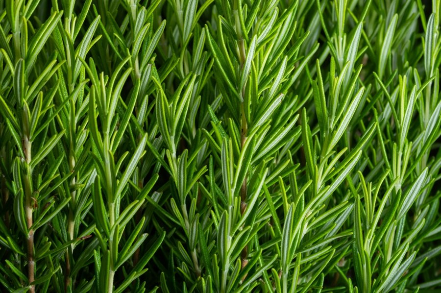

Mashed Potatoes
A thanksgiving classic. This fluffy and delicous side is sure to be seen on every family members plate. The buttery goodness mixed with flavors of pepper and rosemary create a delicitable combination no one can resist. A easy choice for number one.

